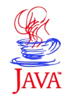

Noosphere is an decentralized, API-first platform for authenticatable information, empowering everyone to actively and transparently manage their personal trust relationships with information sources.
A defining challenge of our time is the problem of misinformation.
Many organizations are attempting to establish digital designs that combat ‘Fake News’. Most are attempting to Fact Check claims to reduce misinformation. These attempts are misguided and have not reflected on the fundamental question:
“Do people trust news because it is factual?”
The answer, of course, is "No". . . .
Americans no longer share objective standards for truth, however, they do share an objective standard for trust: the source.
Americans tend to trust information that comes from a trustworthy source, regardless of the truthiness of the facts. Noosphere is inventing an extensible system and method for cryptographically assuring that the information comes from the stated source, and the information has not been tampered with since publication. This system will allow Americans to operationalize trust in news sources.


Noosphere delivers authenticable news over the internet, giving people transparent, granular control over their information trust networks.
Noosphere provides cryptographic assurance to news organizations, making their identities, associations, and ownership over their news artifacts.
Noosphere moves trust away from centralizing authority into the hands of people, so that they can determine who and what they can trust.
Noosphere serves as an intermediary between news organizations, associations, publishers and readers, enabling content syndication into a persistent, decentralized repository, available to everyone, controlled by no one, whose center is everywhere, and whose circumference in noowhere [sic].